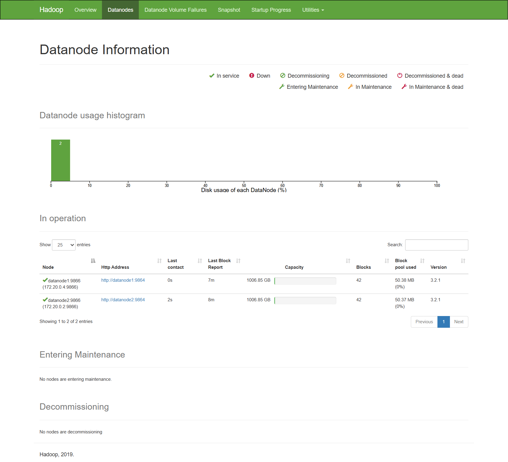
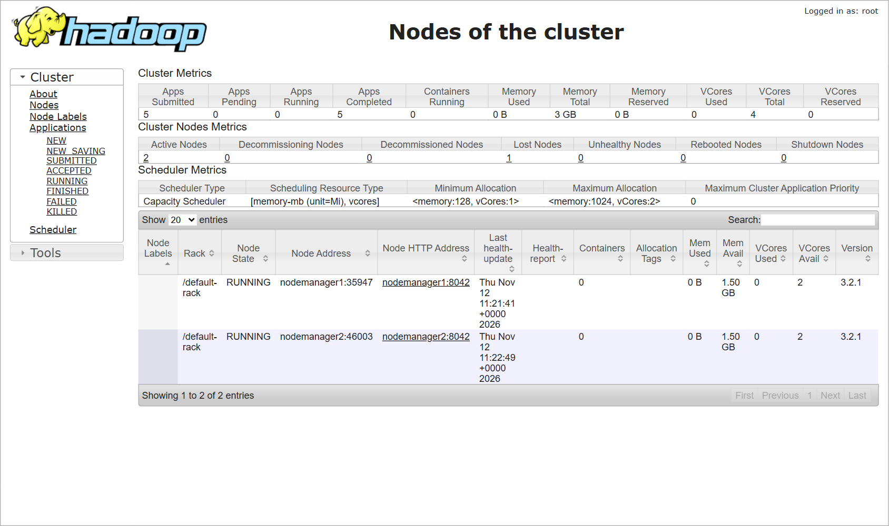
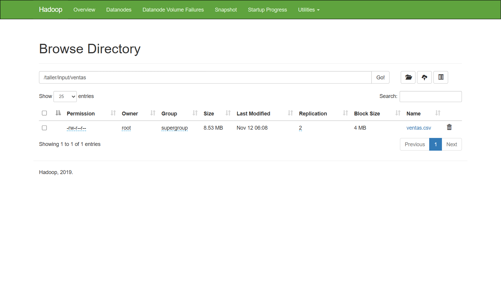
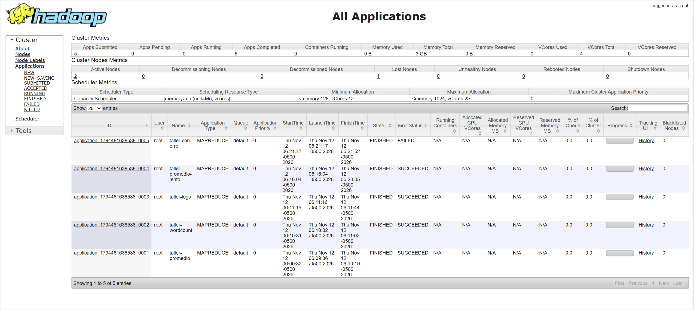
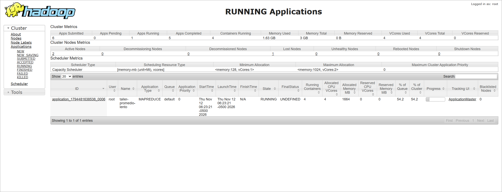
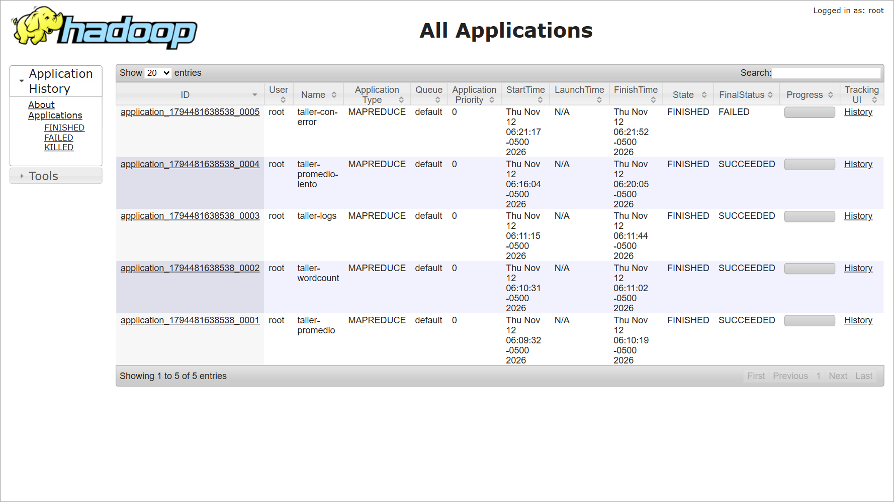
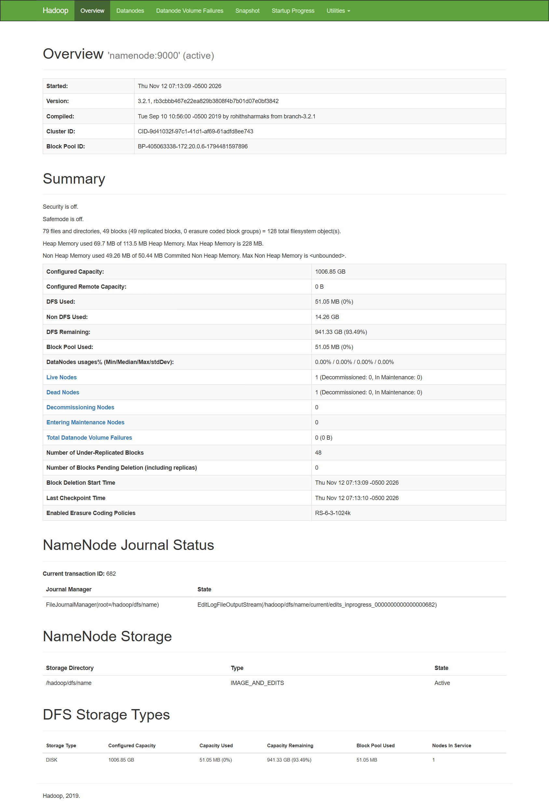
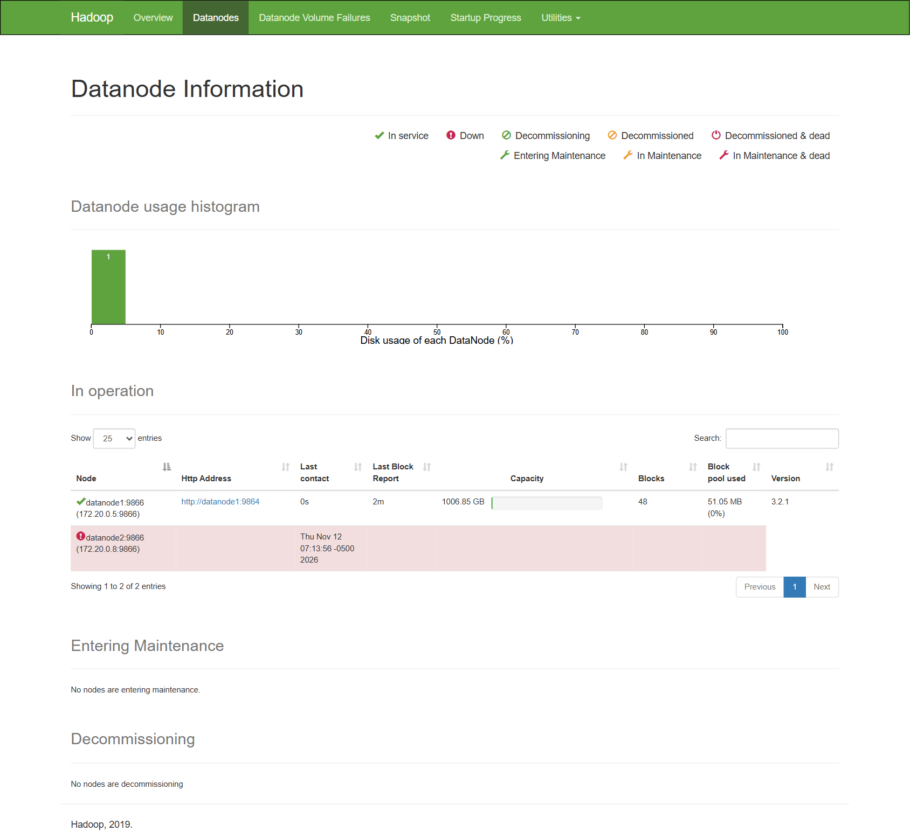

Big Data · Prof. Heberth Martinez · Guía para hacerlo desde cero, con las salidas reales que obtuvimos al correrlo (12-nov-2026).
Repositorio: github.com/oraboni08/taller_hdfs
| Punto del PDF | Cómo lo cumplimos | Evidencia |
|---|---|---|
| 1. Clúster HDFS ≥ 3 nodos (+ opcionales) | NameNode + 2 DataNodes, y además ResourceManager, 2 NodeManagers y HistoryServer. Un contenedor client para dar comandos. | Paso 5: docker compose ps, web de HDFS (9870) y YARN (8088). |
| 2. Tres jobs MapReduce | Promedio por clave, WordCount (con combiner) y análisis de logs (horas pico + errores), en Python con Hadoop Streaming. Dataset, estructura de input, salidas y validación definidos. | Paso 7 y 8: los 3 coinciden al 100 % con el resultado esperado. |
| 3. Verificar ejecución | Estados en YARN UI y yarn application -list, logs con yarn logs, salidas con hdfs dfs -ls / -cat, logs de contenedores con docker compose logs. Se vieron RUNNING, SUCCEEDED y FAILED. | Paso 9. |
| 4. Tolerancia a fallos | 4 pruebas: apagar un DataNode, reiniciar un DataNode durante un put, detener un NodeManager con un job corriendo, y una tarea map que falla. | Paso 10, con las salidas reales. |
Cuando los datos son demasiado grandes para un solo computador (terabytes de logs, millones de ventas, todo lo que escribe una app en un año), aparecen dos problemas:
Hadoop resuelve las dos cosas con la misma idea: repartir. Los datos se parten en pedazos (bloques) guardados en muchos computadores (nodos), y el cálculo se lleva a donde están los datos, para que cada nodo procese su pedazo al mismo tiempo que los demás.
| Concepto | Qué es | En este taller |
|---|---|---|
| Bloque | Pedazo de tamaño fijo en que HDFS parte cada archivo. | 4 MB (en producción suele ser 128 MB). Así un archivo de 8,5 MB queda en 3 bloques y se ve el reparto. |
| NameNode | El "índice": sabe qué bloques forman cada archivo y en qué DataNode está cada uno. No guarda datos. | Contenedor namenode, web en localhost:9870. |
| DataNode | Guarda los bloques en su disco y cada 3 s le manda un "latido" (heartbeat) al NameNode. | datanode1 y datanode2. |
| Replicación | Número de copias de cada bloque, en nodos distintos. | 2, porque hay 2 DataNodes (con 3 quedaría siempre "sub-replicado"). |
| Dead node | Si un DataNode deja de mandar latidos un tiempo, el NameNode lo marca muerto y usa las otras copias. | Configurado para que pase en ~60 s (por defecto son 10,5 min). |
| Safe mode | Modo de solo lectura al arrancar, mientras el NameNode verifica que los bloques estén. | Los scripts esperan a que salga de safe mode. |
| Pieza | Qué hace | En este taller |
|---|---|---|
| ResourceManager | El jefe: conoce la memoria y CPU libre de cada nodo y asigna "contenedores" (porciones de memoria+CPU) a cada aplicación. | resourcemanager, web en localhost:8088. |
| NodeManager | El trabajador: ejecuta los contenedores que le asignan y reporta su estado. Si deja de reportar, queda LOST y sus tareas se repiten en otro nodo. | nodemanager1 y nodemanager2 (cada uno ofrece 1,5 GB y 2 CPU, y trae Python 3). |
| ApplicationMaster | Un "capataz" por cada job: pide contenedores al ResourceManager, lanza los map y reduce y reintenta los que fallen. | Aparece solo mientras corre un job. |
| HistoryServer | Guarda el historial de las aplicaciones ya terminadas. | historyserver, web en localhost:8188. |
| Estados | Una aplicación pasa por ACCEPTED → RUNNING → FINISHED, con resultado final SUCCEEDED, FAILED o KILLED. | Se ven en localhost:8088 o con yarn application -list. |
Ejemplo con el Job 1 (promedio por categoría):
clave valor:2026-09-21,electronica,Cali,1946600 → electronica 1946600
alimentos 12300 alimentos 45100 electronica 1946600 …
electronica 1403720.81 31503 44221416800.00
Hadoop Streaming permite escribir el mapper y el reducer en cualquier lenguaje (aquí Python): Hadoop les pasa las líneas por la entrada estándar (stdin) y lee lo que imprimen (stdout), con la clave y el valor separados por un tabulador. Por eso Python debe estar instalado en los NodeManagers, que son quienes ejecutan las tareas.
El combiner (usado en WordCount) es un "mini-reduce" que corre al final de cada map: en vez de mandar por la red 300.000 veces la 1, cada map manda la 95000. El resultado es el mismo, con mucho menos tráfico.
| Si falla… | Qué hace Hadoop |
|---|---|
| Un DataNode | El NameNode lo marca Dead, lee los bloques de la otra copia y, si hay otro nodo disponible, vuelve a copiarlos para recuperar la replicación. |
| Un DataNode mientras se escribe | El cliente saca al nodo caído del "pipeline" de escritura y sigue escribiendo en los que quedan. |
| Un NodeManager | El ResourceManager lo marca LOST y el ApplicationMaster vuelve a lanzar sus tareas en otro NodeManager. |
| Una tarea (bug, memoria, etc.) | Se reintenta hasta 4 veces; si todas fallan, el job termina FAILED y el error queda en los logs. |
Esta parte está escrita para que alguien que nunca ha usado Hadoop pueda reconstruir todo sola. Cada paso dice qué hacer, por qué y qué debe salir (con la salida real que obtuvimos). Los comandos funcionan igual en PowerShell, macOS y Linux, salvo donde se indica.
hadoop.env se limitó cada proceso a 256 MB. En Docker Desktop: Settings → Resources (o en WSL, el archivo .wslconfig).9870, 8088 y 8188. Si otro laboratorio los usa, apágalo o cambia los puertos (ver Parte D).docker --version
docker compose version
docker info --format "{{.MemTotal}}" # memoria disponible para Docker, en bytesClona el repo (o crea las carpetas a mano si lo haces desde cero):
git clone https://github.com/oraboni08/taller_hdfs.git
cd taller_hdfstaller_hdfs/ ├── docker-compose.yml # define los 8 contenedores ├── hadoop.env # configuración de Hadoop compartida por todos ├── docker/Dockerfile.python # agrega Python 3 a las imágenes de Hadoop ├── jobs/ # mappers y reducers en Python │ ├── mapper_promedio.py reducer_promedio.py │ ├── mapper_wordcount.py reducer_wordcount.py │ ├── mapper_logs.py reducer_logs.py │ └── mapper_con_error.py # falla a propósito (prueba de fallos) ├── scripts/ # se ejecutan DENTRO del contenedor client │ ├── comun.sh # funciones compartidas (correr_job, esperar_hdfs…) │ ├── generar_datos.py # crea los 3 datasets + resultados esperados │ ├── 01_cargar_datos.sh 02_ejecutar_jobs.sh 03_validar.sh │ ├── 04_job_lento.sh 05_job_con_error.sh estado.sh │ └── validar.py ├── datasets/ # se generan (no se suben a git) └── docs/ # esta guía + capturas
client en /workspace. Así lo que editas en tu PC aparece al instante dentro del clúster, sin copiar nada.hadoop.env)Usamos las imágenes bde2020/hadoop-* (Hadoop 3.2.1). Su script de arranque convierte variables de entorno en los XML de Hadoop: CORE_CONF_* → core-site.xml, HDFS_CONF_* → hdfs-site.xml, YARN_CONF_* → yarn-site.xml, MAPRED_CONF_* → mapred-site.xml. En el nombre, _ = ., __ = _ y ___ = -.
Por ejemplo, HDFS_CONF_dfs_replication=2 se vuelve la propiedad dfs.replication = 2.
| Variable | Valor | Por qué |
|---|---|---|
CORE_CONF_fs_defaultFS | hdfs://namenode:9000 | Dónde está el NameNode. Cuando escribes /taller, Hadoop entiende hdfs://namenode:9000/taller. |
HDFS_CONF_dfs_replication | 2 | Una copia de cada bloque en cada DataNode. Con 3 (el valor por defecto) y solo 2 nodos, todo quedaría "sub-replicado" siempre. |
HDFS_CONF_dfs_blocksize | 4194304 (4 MB) | Para que archivos de ~10 MB se partan en varios bloques → varios maps en paralelo. En producción es 128 MB. |
dfs_heartbeat_interval + heartbeat_recheck-interval | 3 s / 15 000 ms | Un DataNode apagado se marca Dead en ~60 s (2×15 + 10×3) en vez de 10,5 min. Así se puede mostrar en clase. |
YARN_CONF_yarn_resourcemanager_hostname | resourcemanager | Sin esto los NodeManagers no saben a quién reportarse. |
yarn_nodemanager_aux-services | mapreduce_shuffle | Servicio que mueve los datos de los maps a los reduces (el "shuffle"). |
yarn_nodemanager_resource_memory-mb / cpu-vcores | 1536 / 2 | Recursos que cada NodeManager ofrece. Ajustado a un portátil. |
yarn_nm_liveness-monitor_expiry-interval-ms | 30000 | Un NodeManager caído se marca LOST a los 30 s (por defecto 10 min). |
yarn_log-aggregation-enable | true | Guarda los logs de cada job en HDFS para leerlos con yarn logs. |
yarn_timeline-service_* | enabled, host = historyserver | El HistoryServer guarda el historial de aplicaciones terminadas. |
MAPRED_CONF_mapreduce_framework_name | yarn | La más importante. Sin ella los jobs corren en modo local dentro del cliente y nunca aparecen en YARN. |
mapreduce_map/reduce_memory_mb, am_resource_mb | 384 / 512 | Memoria de cada tarea y del ApplicationMaster, para que quepan varias a la vez. |
HADOOP_HEAPSIZE_MAX | 256m | Límite de memoria de cada demonio Java (8 contenedores en ~4 GB). |
docker/Dockerfile.python)Con Hadoop Streaming los mappers y reducers en Python se ejecutan en los NodeManagers, no en el cliente. Las imágenes oficiales de bde2020 no traen Python, así que creamos una imagen derivada:
ARG BASE_IMAGE
FROM ${BASE_IMAGE}
# Debian 9 "stretch" ya está archivado: hay que apuntar a archive.debian.org
RUN echo "deb http://archive.debian.org/debian stretch main" > /etc/apt/sources.list \
&& echo "deb http://archive.debian.org/debian-security stretch/updates main" >> /etc/apt/sources.list \
&& echo 'Acquire::Check-Valid-Until "false";' > /etc/apt/apt.conf.d/99no-check-valid-until \
&& apt-get update && apt-get install -y --no-install-recommends python3 \
&& rm -rf /var/lib/apt/lists/*El mismo Dockerfile sirve para dos imágenes cambiando BASE_IMAGE: hadoop-nodemanager (para los 2 NodeManagers) y hadoop-base (para el cliente). Queda Python 3.5, por eso los scripts evitan sintaxis moderna como f-strings.
docker-compose.ymlDefine 8 servicios en una red hdfs-net, donde se encuentran por nombre (namenode, datanode1…). Un bloque común x-hadoop evita repetir env_file, red y plataforma.
| Servicio | Imagen | Detalle |
|---|---|---|
namenode | bde2020/hadoop-namenode | Puerto web 9870. Volumen namenode-data (el índice sobrevive a reinicios). |
datanode1, datanode2 | bde2020/hadoop-datanode | Cada uno con su volumen. SERVICE_PRECONDITION=namenode:9870: espera a que el NameNode responda antes de arrancar. |
resourcemanager | bde2020/hadoop-resourcemanager | Puerto web 8088. Espera a NameNode y DataNodes. |
nodemanager1, nodemanager2 | taller_hdfs/nodemanager-python (se construye) | nodemanager1 construye la imagen y nodemanager2 la reutiliza. |
historyserver | bde2020/hadoop-historyserver | Puerto web 8188. |
client | taller_hdfs/client-python (se construye) | command: tail -f /dev/null para que quede encendido; monta el proyecto en /workspace. |
Los puertos del host se pueden cambiar sin editar el archivo: "${PUERTO_HDFS:-9870}:9870" usa 9870 salvo que definas la variable PUERTO_HDFS.
docker compose up -d --build # la 1.ª vez descarga ~2 GB por imagen: 5-15 min
docker compose psNAME SERVICE STATUS client client Up datanode1 datanode1 Up (healthy) datanode2 datanode2 Up (healthy) historyserver historyserver Up (healthy) namenode namenode Up (healthy) nodemanager1 nodemanager1 Up (healthy) nodemanager2 nodemanager2 Up (healthy) resourcemanager resourcemanager Up (healthy)
Espera ~1 minuto a que todos digan healthy. Luego revisa el estado desde el cliente:
docker compose exec client bash scripts/estado.sh==================== HDFS: DataNodes ==================== Live datanodes (2): Hostname: datanode2 DFS Used: 36809614 (35.10 MB) Hostname: datanode1 DFS Used: 36809614 (35.10 MB) ==================== YARN: NodeManagers ==================== Total Nodes:2 nodemanager1:35947 RUNNING nodemanager1:8042 nodemanager2:40999 RUNNING nodemanager2:8042
| URL | Qué revisar |
|---|---|
| localhost:9870 (HDFS) | Overview: "Live Nodes 2", "Dead Nodes 0". Datanodes: los dos en servicio. Utilities → Browse the file system: carpetas y bloques. |
| localhost:8088 (YARN) | Nodes: 2 NodeManagers RUNNING. Applications: los jobs y su estado. |
| localhost:8188 (History) | Historial de aplicaciones terminadas. |


scripts/generar_datos.py crea 3 datasets con semilla fija (siempre los mismos datos) y, sin usar Hadoop, calcula el resultado correcto de cada job en datasets/esperado/. Eso es lo que nos permite la validación manual.
| Dataset | Tamaño | Formato de cada línea |
|---|---|---|
ventas.csv | 260 000 ventas · 8,5 MB · 3 bloques | 2026-09-21,electronica,Cali,1946600 (fecha, categoría, ciudad, valor) |
resenas.txt | 150 000 reseñas · 11 MB · 3 bloques | Una reseña de cliente en texto libre |
logs_servidor.log | 280 000 líneas · 14 MB · 4 bloques | 2026-11-08 14:23:11 INFO GET /api/productos 200 123ms |
/taller/input/ventas/ventas.csv
/taller/input/resenas/resenas.txt
/taller/input/logs/logs_servidor.log
/taller/output/promedio /taller/output/wordcount /taller/output/logs # las crean los jobs
Cada dataset va en su propia carpeta porque Hadoop recibe una carpeta como entrada y procesa todos los archivos que tenga.
docker compose exec client bash scripts/01_cargar_datos.shPor dentro hace: python3 scripts/generar_datos.py, hdfs dfs -mkdir -p …, hdfs dfs -put -f … y hdfs fsck … -files -blocks -locations.
-rw-r--r-- 2 root supergroup 14322599 2026-11-12 11:09 /taller/input/logs/logs_servidor.log -rw-r--r-- 2 root supergroup 11738116 2026-11-12 11:08 /taller/input/resenas/resenas.txt -rw-r--r-- 2 root supergroup 8941651 2026-11-12 11:08 /taller/input/ventas/ventas.csv ==================== Bloques y réplicas (hdfs fsck) ==================== /taller/input/ventas/ventas.csv 8941651 bytes, replicated: replication=2, 3 block(s): OK 0. blk_1073741825 len=4194304 Live_repl=2 [172.20.0.4, 172.20.0.2] 1. blk_1073741826 len=4194304 Live_repl=2 [172.20.0.4, 172.20.0.2] 2. blk_1073741827 len=553043 Live_repl=2 [172.20.0.2, 172.20.0.4] Total blocks (validated): 10 (avg. block size 3500236 B) Under-replicated blocks: 0 (0.0 %) Average block replication: 2.0 The filesystem under path '/taller/input' is HEALTHY
2 después de los permisos es el factor de replicación. ventas.csv quedó en 3 bloques (4 + 4 + 0,5 MB), cada uno con Live_repl=2 y dos IPs: una copia en cada DataNode. En total 10 bloques, todos sanos.
Cada job son dos scripts Python que leen de stdin y escriben en stdout líneas clave<TAB>valor. Hadoop ordena por clave entre el map y el reduce, así que el reducer recibe juntas todas las líneas de la misma clave y solo tiene que detectar cuándo cambia.
# mapper_promedio.py (resumido)
for linea in entrada:
partes = linea.strip().split(",")
if len(partes) != 4 or partes[0] == "fecha": # salta encabezado
continue
salida.write("%s\t%s\n" % (partes[1], partes[3])) # categoria valor
# reducer_promedio.py (resumido)
for linea in entrada:
categoria, valor = linea.rstrip("\n").split("\t")
if categoria != actual: # cambió la clave → emitir la anterior
if actual is not None: emitir() # categoria promedio cantidad total
actual, suma, cantidad = categoria, 0.0, 0
suma += float(valor); cantidad += 1
if actual is not None: emitir()El mapper pasa cada reseña a minúsculas, extrae palabras con la expresión [a-záéíóúüñ]+ y emite palabra 1. El reducer suma. El mismo reducer se usa como combiner (-combiner "python3 reducer_wordcount.py"), que hace sumas parciales en cada map.
El mapper toma la hora (14 de 14:23:11) y emite hora 1 es_error, donde es_error = 1 si el nivel es ERROR o el código HTTP ≥ 500. El reducer suma peticiones y errores y calcula el porcentaje.
Un job de Streaming es equivalente a mapper | sort | reducer. Probarlo así detecta errores en segundos:
docker compose exec client bash -c "head -2000 datasets/ventas.csv | python3 jobs/mapper_promedio.py | sort | python3 jobs/reducer_promedio.py"docker compose exec client bash scripts/02_ejecutar_jobs.sh # los 3
docker compose exec client bash scripts/02_ejecutar_jobs.sh wordcount # solo unoPara cada job el script ejecuta (función correr_job de comun.sh):
hdfs dfs -rm -r -f -skipTrash /taller/output/promedio # Hadoop NO sobreescribe una salida existente
hadoop jar /opt/hadoop-3.2.1/share/hadoop/tools/lib/hadoop-streaming-3.2.1.jar \
-D mapreduce.job.name="taller-promedio" \
-D mapreduce.job.reduces=1 \
-files "jobs/mapper_promedio.py,jobs/reducer_promedio.py" \ # copia los .py a cada NodeManager
-mapper "python3 mapper_promedio.py" \
-reducer "python3 reducer_promedio.py" \
-input /taller/input/ventas \
-output /taller/output/promedio| Opción | Para qué |
|---|---|
-D mapreduce.job.name | Nombre que se ve en YARN (taller-promedio…). |
-D mapreduce.job.reduces=1 | Un solo reducer → un solo archivo de salida part-00000, fácil de comparar. |
-files | Distribuye los scripts a los nodos que ejecutan las tareas. |
-input / -output | Carpeta de entrada y de salida en HDFS (la de salida no debe existir). |
INFO impl.YarnClientImpl: Submitted application application_1794481638538_0001
INFO mapreduce.Job: map 0% reduce 0%
INFO mapreduce.Job: map 100% reduce 0%
INFO mapreduce.Job: map 100% reduce 100%
INFO mapreduce.Job: Job job_1794481638538_0001 completed successfully
alimentos 42480.41 77749 3302809300.00
deportes 320257.54 23315 7466804600.00
electronica 1403720.81 31503 44221416800.00
hogar 209572.94 46569 9759602200.00
libros 68018.20 15498 1054146100.00
ropa 140300.93 65366 9170910500.00
Top 10 palabras: hora peticiones errores %error
el 180176 12 23256 2118 9.11
la 119824 13 21996 1944 8.84
y 98171 19 26069 2371 9.10
lo 56048 20 29290 2657 9.07 # hora pico
fue 51843 ...
llegó 51576

docker compose exec client bash scripts/03_validar.shPara cada job: lista la carpeta de salida (hdfs dfs -ls), descarga la salida (hdfs dfs -cat … > resultados/job.tsv) y la compara clave por clave con datasets/esperado/job.tsv usando validar.py.
==================== Validando promedio ==================== -rw-r--r-- 2 root supergroup 0 2026-11-12 11:10 /taller/output/promedio/_SUCCESS -rw-r--r-- 2 root supergroup 229 2026-11-12 11:10 /taller/output/promedio/part-00000 claves comparadas: 6 RESULTADO: OK, la salida de Hadoop coincide 100 % con el cálculo esperado ==================== Validando wordcount ==================== claves comparadas: 67 RESULTADO: OK, la salida de Hadoop coincide 100 % con el cálculo esperado ==================== Validando logs ==================== claves comparadas: 24 RESULTADO: OK, la salida de Hadoop coincide 100 % con el cálculo esperado
_SUCCESS lo crea Hadoop solo cuando el job terminó bien. part-00000 es la salida del reducer 0.También puedes validar a mano un dato. Por ejemplo, cuántas ventas de "libros" hay:
docker compose exec client bash -c "grep -c ',libros,' datasets/ventas.csv" # → 15498, igual que el jobdocker compose exec client bash
# ---- ya dentro del contenedor ----
yarn application -list -appStates ALL # todas las aplicaciones con su estado final
yarn application -status application_1794481638538_0001
yarn logs -applicationId application_1794481638538_0001 | less # logs de todos los contenedores
hdfs dfs -ls -R /taller/output
hdfs dfs -cat /taller/output/logs/part-00000
exit
# ---- desde tu PC: logs de los contenedores de Hadoop ----
docker compose logs --tail 50 resourcemanager
docker compose logs --tail 50 namenodeapplication_1794481638538_0001 taller-promedio FINISHED SUCCEEDED application_1794481638538_0002 taller-wordcount FINISHED SUCCEEDED application_1794481638538_0003 taller-logs FINISHED SUCCEEDED application_1794481638538_0004 taller-promedio-lento FINISHED SUCCEEDED application_1794481638538_0005 taller-con-error FINISHED FAILED
Fragmento de yarn logs: el ApplicationMaster lanzando los 3 maps (uno por bloque) y marcándolos terminados:
Container: container_1794481638538_0001_01_000001 on nodemanager1_35947 LogAggregationType: AGGREGATED ... JobImpl: JOB_CREATE job_1794481638538_0001 ... ATTEMPT_START task_1794481638538_0001_m_000000 ... ATTEMPT_START task_1794481638538_0001_m_000001 ... ATTEMPT_START task_1794481638538_0001_m_000002 ... Task succeeded with attempt attempt_1794481638538_0001_m_000002_0 ... task_1794481638538_0001_m_000002 Task Transitioned from RUNNING to SUCCEEDED
| Estado | Dónde lo vimos |
|---|---|
| RUNNING | En YARN → Applications → RUNNING mientras corría el job lento (captura abajo). |
| SUCCEEDED | Los 3 jobs principales y el job lento (incluso después de perder un NodeManager). |
| FAILED | El job con el mapper defectuoso (prueba 4). |


application_1794481638538_0004 = aplicación n.º 4 desde que arrancó el ResourceManager. attempt_…_0004_m_000002_1 = job 4, tarea map n.º 2, intento n.º 1 (el segundo, porque empiezan en 0). Una r en vez de m es una tarea reduce.Abre dos terminales en la carpeta del proyecto: una para provocar el fallo y otra para observar. Antes de empezar confirma con scripts/estado.sh que todo está sano.
docker compose stop datanode2
# esperar ~60-70 s (los latidos dejan de llegar y el NameNode lo declara muerto)
docker compose exec client bash scripts/estado.sh
docker compose exec client bash -c "hdfs fsck /taller/input"
docker compose exec client bash -c "hdfs dfs -cat /taller/input/ventas/ventas.csv | wc -l"### 06:12:51 docker compose stop datanode2 ### 06:12:55 estado inmediato Live datanodes (2): # aún no se ha dado cuenta ### ~70 s después: hdfs dfsadmin -report Under replicated blocks: 28 Missing blocks: 0 Live datanodes (1): Hostname: datanode1 Dead datanodes (1): Hostname: datanode2 ### hdfs fsck /taller/input Under-replicated blocks: 10 (100.0 %) Average block replication: 1.0 Missing blocks: 0 The filesystem under path '/taller/input' is HEALTHY ### leer un archivo con un DataNode caído 260001 # las 260 000 ventas + encabezado: el archivo está completo
En la web de HDFS (localhost:9870) se ve lo mismo:


Luego se vuelve a encender:
docker compose start datanode2
docker compose exec client bash scripts/estado.sh### 06:14:57 estado tras reintegrar (25 s después)
Under replicated blocks: 0
Live datanodes (2):
Average block replication: 2.0
The filesystem under path '/taller/input' is HEALTHY
# Terminal 1: subir un archivo de 14 MB
docker compose exec client bash -c "hdfs dfs -mkdir -p /taller/prueba && time hdfs dfs -put -f datasets/logs_servidor.log /taller/prueba/copia.log; echo EXIT_PUT=\$?"
# Terminal 2: inmediatamente (a los 2-5 s)
docker compose restart datanode1### 06:15:19 inicia el put ### 06:15:25 docker compose restart datanode1 WARN hdfs.DataStreamer: Exception for BP-…:blk_1073741879_1055 java.io.IOException: Connection reset by peer WARN hdfs.DataStreamer: Error Recovery for …blk_1073741879_1055 in pipeline [… 172.20.0.4:9866 …] WARN hdfs.DataStreamer: Abandoning BP-…:blk_1073741880_1057 WARN hdfs.DataStreamer: Excluding datanode DatanodeInfoWithStorage[172.20.0.4:9866,…] real 0m6.608s EXIT_PUT=0 ### verificación de integridad md5 local : 77b3e925655d8467946f4c5ba3564a02 md5 HDFS : 77b3e925655d8467946f4c5ba3564a02 -rw-r--r-- 2 root supergroup 14322599 2026-11-12 11:15 /taller/prueba/copia.log
La verificación se hace comparando la huella MD5 del archivo original y la copia en HDFS:
docker compose exec client bash -c "md5sum datasets/logs_servidor.log; hdfs dfs -cat /taller/prueba/copia.log | md5sum"put terminó con código 0 y el archivo quedó idéntico (mismo MD5). Al volver el nodo, HDFS completó la segunda réplica.04_job_lento.sh corre el mismo job de promedio pero con una pausa en el mapper (RETARDO_MS=1500 cada 1000 líneas) para que dure ~4 minutos y dé tiempo de provocar el fallo.
# Terminal 1
docker compose exec client bash scripts/04_job_lento.sh
# Terminal 2: cuando el job ya esté en "map 20%" o más
docker compose exec client bash -c "yarn node -list -all" # ver en qué nodos hay contenedores
docker compose stop nodemanager2
docker compose exec client bash -c "yarn node -list -all" # repetir cada ~10 s### 06:16:30 contenedores por NodeManager antes del fallo nodemanager1:35947 RUNNING 3 nodemanager2:40999 RUNNING 1 ### 06:16:35 docker compose stop nodemanager2 [06:17:02] nodemanager2:40999 RUNNING 1 # todavía no lo detecta [06:17:14] nodemanager2:40999 LOST 1 # ~30-40 s: marcado LOST [06:17:41] nodemanager2:40999 LOST 0 # progreso del job (terminal 1) map 31% reduce 0% map 32% reduce 0% map 17% reduce 0% # ¡retrocede! se perdió el avance de la tarea que corría en nodemanager2 map 18% reduce 0% ... Job job_1794481638538_0004 completed successfully # yarn logs del ApplicationMaster 11:16:16 Assigned container …_000004 to attempt_…_0004_m_000002_0 11:17:31 Killing taskAttempt:attempt_…_0004_m_000002_0 because it is running on unusable node:nodemanager2:40999 11:17:31 Diagnostics report from attempt_…_0004_m_000002_0: Container released on a *lost* node 11:19:25 Assigned container …_000006 to attempt_…_0004_m_000002_1 # reintento en otro nodo Resultado: alimentos 42480.41 77749 … (idéntico al job normal)
m_000002_0 que corría allí y lanzó un nuevo intento (m_000002_1) en nodemanager1. El job terminó SUCCEEDED con el resultado correcto. Por eso el progreso "retrocedió" de 32 % a 17 %: se repitió el trabajo perdido.Para volver a la normalidad: docker compose start nodemanager2. Se registra con un puerto nuevo, por eso yarn node -list -all muestra después 2 RUNNING + el viejo como LOST (es solo historial).
mapper_con_error.py lanza una excepción al leer la primera línea. Simula un bug en el código del job.
docker compose exec client bash scripts/05_job_con_error.shTask Id : attempt_1794481638538_0005_m_000000_0, Status : FAILED
Error: java.lang.RuntimeException: PipeMapRed.waitOutputThreads(): subprocess failed with code 1
Task Id : attempt_1794481638538_0005_m_000001_0, Status : FAILED
...
Task Id : attempt_1794481638538_0005_m_000002_2, Status : FAILED
Job job_1794481638538_0005 failed with state FAILED due to: Task failed task_1794481638538_0005_m_000001
Job failed as tasks failed. failedMaps:1 failedReduces:0
Failed map tasks=10
Launched map tasks=11
Streaming Command Failed!
Código de salida del job: 1 (distinto de 0 = falló)
El mensaje de Hadoop no dice cuál fue el error de Python. Para verlo se leen los logs de la aplicación:
docker compose exec client bash -c "yarn logs -applicationId application_1794481638538_0005 | grep -A4 Traceback"Traceback (most recent call last):
File "mapper_con_error.py", line 8, in <module>
raise RuntimeError("Error simulado en el mapper: %s" % linea[:40])
RuntimeError: Error simulado en el mapper: fecha,categoria,ciudad,valor
mapreduce.map.maxattempts, intentos _0 a _3), en distintos nodos. Como el error está en el código y no en una máquina, todos los intentos fallaron y el job terminó FAILED sin escribir salida (no hay _SUCCESS). Diferencia con la prueba 3: los reintentos arreglan fallos de infraestructura, no errores de programación.| Prueba | Lo que se observó | Mecanismo de Hadoop |
|---|---|---|
| 1. DataNode apagado | Dead node en ~70 s, 10 bloques sub-replicados, 0 perdidos, archivos legibles; HEALTHY al volver. | Heartbeats + replicación |
2. Reinicio durante put | "Excluding datanode", put exitoso, MD5 idéntico. | Recuperación del pipeline de escritura |
| 3. NodeManager detenido | LOST en ~40 s, intento matado y relanzado en otro nodo, job SUCCEEDED. | Liveness monitor + reintento de tareas |
| 4. Mapper con bug | 4 intentos por tarea, job FAILED, error visible en yarn logs. | maxattempts + log aggregation |
docker compose down # apaga y conserva los datos de HDFS (volúmenes)
docker compose down -v # apaga y BORRA los datos de HDFSSi la próxima vez levantas con docker compose up -d sin -v, los datasets siguen en HDFS y puedes ir directo al paso 7.
La primera versión del repo levantaba el clúster y tenía 3 jobs, pero no cumplía los puntos 3 y 4 del taller. Cambios (rama mejoras-taller):
| Problema | Consecuencia | Corrección |
|---|---|---|
Faltaba mapreduce.framework.name=yarn | Los jobs corrían en modo local dentro del cliente: no aparecían en YARN y detener un NodeManager no tenía efecto. | Agregado en hadoop.env, más memoria de tareas y ApplicationMaster. |
Faltaba yarn.resourcemanager.hostname | El NodeManager no encontraba al ResourceManager. | Agregado. |
| Python solo en el cliente | En YARN las tareas corren en los NodeManagers y fallarían con "python3: not found". | Dockerfile.python para NodeManagers y cliente; scripts enviados con -files. |
| Replicación 3 con 2 DataNodes | Todo quedaba sub-replicado desde el inicio; confunde la prueba de fallos. | dfs.replication=2. |
| Un solo NodeManager | Al detenerlo no había adónde mover las tareas. | Dos NodeManagers + HistoryServer. |
| Datasets pequeños (1 bloque) | Un solo map; no se ve el paralelismo ni el reparto de bloques. | Generador con 8-14 MB por dataset y bloques de 4 MB. |
| Detección de fallos en 10 min | Imposible mostrar Dead / LOST en clase. | Heartbeats ajustados: ~60 s (DataNode) y 30 s (NodeManager). |
| Sin validación ni logs | No se podía demostrar que el resultado era correcto. | Resultados esperados + validar.py, agregación de logs y scripts numerados. |
| Síntoma | Causa / solución |
|---|---|
failed to connect to the docker API … dockerDesktopLinuxEngine | Docker Desktop está cerrado. Ábrelo y espera a que diga "Engine running". |
Bind for 0.0.0.0:9870 failed: port is already allocated | Otro clúster usa el puerto. Apágalo, o en PowerShell: $env:PUERTO_HDFS=19870; $env:PUERTO_YARN=18088; $env:PUERTO_HISTORY=18188; docker compose up -d |
no configuration file provided: not found | Estás en otra carpeta. Haz cd a la que tiene docker-compose.yml. |
Name node is in safe mode | El NameNode acaba de arrancar. Espera ~30 s (los scripts ya esperan solos). |
Output directory … already exists | Hadoop no sobreescribe. hdfs dfs -rm -r /taller/output/<job> (los scripts lo hacen solos). |
El job se queda en ACCEPTED | No hay memoria libre en YARN o los NodeManagers no están registrados. Revisa yarn node -list y la memoria de Docker. |
| Contenedores que se reinician solos (Exited 137) | Docker se quedó sin memoria. Cierra otros contenedores o sube la memoria de Docker. |
subprocess failed with code 1/2 | Error en el script Python. Pruébalo con mapper | sort | reducer y lee el Traceback con yarn logs. |
hdfs fsck / muestra unos pocos bloques under-replicated que nunca bajan a 0 | Son archivos de /tmp/hadoop-yarn/staging/… (el job.jar, los .py y el job.split de un job interrumpido). MapReduce los sube con replicación 10 para que muchos nodos los descarguen rápido, y con 2 DataNodes nunca se alcanza. No es un error: revisa hdfs fsck /taller, que es donde están los datos. Si quieres borrarlos: hdfs dfs -rm -r /tmp/hadoop-yarn/staging/root/.staging/job_*. |
Scripts con \r: command not found | Finales de línea de Windows. El repo tiene .gitattributes para forzar LF; si editas con Notepad, guarda en formato LF. |
Porque es el único que sabe qué bloques forman cada archivo. Si se cae, los datos siguen en los DataNodes pero nadie puede encontrarlos. En producción se usa NameNode en alta disponibilidad (uno activo y otro en espera). En nuestro clúster hay uno solo.
Para que nuestros archivos de ~10 MB se partan en varios bloques y se vea el paralelismo (un map por bloque) y la distribución entre nodos. Con 128 MB cada archivo sería un solo bloque y un solo map.
El NameNode lo marca muerto y ordena copiar los bloques que quedaron con 2 réplicas a otro nodo vivo hasta volver a 3. En nuestro caso, con 2 nodos, no hay adónde copiar, por eso quedan sub-replicados hasta que el nodo vuelve.
HDFS almacena (NameNode + DataNodes). YARN asigna recursos y ejecuta (ResourceManager + NodeManagers). Son independientes: el NodeManager puede caerse sin afectar los datos, y el DataNode puede caerse sin detener un job si hay otra réplica.
La fase entre map y reduce: Hadoop agrupa las salidas de todos los maps por clave, las ordena y las envía al reducer correspondiente. Por eso el reducer recibe juntas todas las líneas de "electronica".
Reduce el tráfico de red haciendo sumas parciales en cada map. Funciona en WordCount porque sumar sumas parciales da lo mismo. En el promedio no se puede usar el mismo reducer: el promedio de promedios no es el promedio total (habría que enviar suma y cantidad).
En la 3 falló la máquina: el reintento en otro nodo funcionó. En la 4 falló el código: falla igual en cualquier nodo, se agotan los 4 intentos y el job falla.
Una utilidad que permite escribir map y reduce en cualquier lenguaje. Hadoop envía las líneas por stdin y lee stdout; la clave es lo que va antes del primer tabulador.